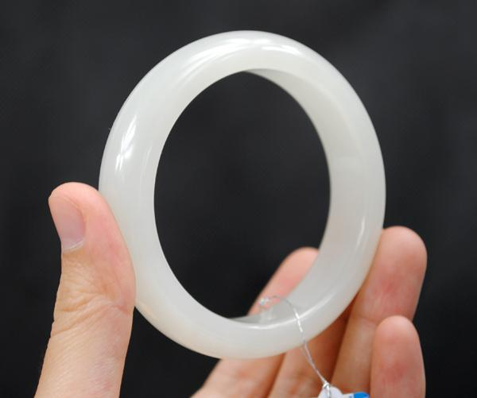
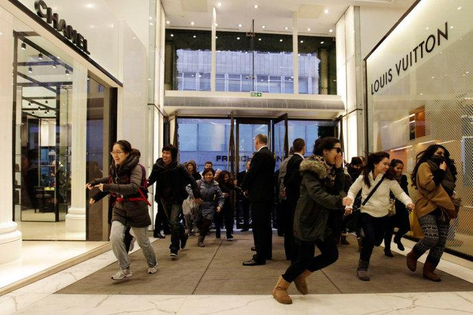

春节是中国人集中花钱的一个机会。根据佛法：如果一个人很会用钱的话，他就会越来越富裕，越用越有。但是一个人如果根本不懂金钱的意义，不懂正确地使用金钱，只会浪费金钱的话，他的“命”就是穷命；一个民族，如果不懂得珍惜它得到的一切，就会失去这一切。这种民族不会有好运气，好福气的；只会写下一个个“多灾多难，贫穷落后”的历史记录。中国人正在越来有钱，我们是否懂得金钱的意义呢？我们民族好像“会赚钱”了，但是懂得“如何花钱”了吗？最近几年春节，我都会发一些文章说明中国人的消费行为，2009 年的文章是写中国人春节大把花钱，买回各种毒品来毒害家人的，导致国人春节过后往往体质体力大幅下降。现在显然国人的“吃”，已经被“更有价值”的投资欲望超过了。今年过年，就写写中国人的金钱贪婪和疯狂吧。在瑞丽，我和家人亲眼见识了国人对于石头的贪婪。这种根本没有生活价值的石头，居然成为城市的“核心元素”和“经济支撑”，城中到处都是卖玉的小店铺，总数应有几千家；数个“珠宝城”辉煌亮丽，里面的小小玉石，价格数万元的是“店里最便宜的低档货色”，店家以“我们这里根本就没有几千元的低档货”而自豪。“好一点的，稍微上点档次的玉石”是数十万，数百万元一件。当然，旅游区（如姐告口岸）里面，也有几百元的低端玉石，出售给仅仅是来玩一下的旅游者。显然来一趟，不能让人们空手回去呀？我很讶异：这种绿色的，半透明的石头，看起来，摸起来，都很像是一片绿色的玻璃；花百十元买来玩一下倒是可以理解；居然要价几十万，上百万，这种小石头真的有人肯掏钱？一家老板说：“买的人可多了，有些老板来，开口就问‘有没有一千万级别’的玉石；该店家的资金少，没敢存货，只有百万元级别的，只好放过这种人的生意了。几十万的生意，是最正常普通的了，常常在卖，没什么奇怪的了。”看了这么多的玉石店，不得不相信老板的话；是呀，如果没人买单，这么多店，这么多人要生活，要买房，要买车，怎么可能维持呢？玉石这么高的价，不就是人抬起来的吗？这个玉石的城市，如果没有客人光顾埋单，为何如此光鲜呢？晚上逛街，就看到了一男一女在店里面买玉石，看的货全是20 万元以上的。女人还把脖子上挂的，一个十年前花了几万元买的小玉佩给老板看，问现在是不是涨价了，挺得意的样子。老板拿出一个价格26 万元的小玉佩，女人用手快速地反复摩擦玉石，像是要把面上的灰尘擦干净的样子。妻子很奇怪地问我，她在干吗？因为肯定不会是擦灰尘。我说：这是内心贪婪的外在表达。这个女人很想占有这块玉，这个动作表达出来她内心“想要占有它，夺取它”的强烈欲望。冷静观察的老板看到这个动作后，就知道“大鱼咬钩”了，正在考虑如何不要“惊了大鱼”，要假装漫不经心的悄悄收网，守住大笔利润。因此我们虽然也在旁边“看玉”，但是老板根本就不注意我们，全力与“爱玉豪客”周旋。
这个爱玉的，内心极度贪婪，同时又很愚蠢自大的女人，谁娶了她够倒霉的。她年龄应该不到40 岁，但是脸上的气色很不好，很不健康的样子；一看就知道不是有福之人。昂贵的玉石，看来并没有给她带来幸福的生活；（这是一只价格超过十万元的玉镯，已经售出了。）一个边境城市，靠根本没什么用的小石头而兴起，繁荣，兴旺；中国人的“创造力”的确让人佩服。如果一个石头居然卖到了百万元，千万元，甚至亿元的高价，当然是“疯狂的石头”。但是石头本身并没有疯狂，疯狂的是中国人的心。不仅石头疯狂了，我还知道中国有“疯狂荔枝”，售价300 元一颗，一万元多一斤。更有新闻报道的“最新疯狂记录”，是55 万元的天价荔枝，总共20 颗，六个人分食的新闻，比玉石的“天价”更让我惊叹国人的创造力。中秋节的“疯狂月饼”---一万八千元一盒。还有“疯狂的茶”---每斤售价11.8 万元。“疯狂的汤”：据说广东有10 万元一份的“佛跳墙”汤。8000 元一份的就更不用说了。

还有“疯狂的被子”---早几年报道说深圳沃尔玛出售10 万元的“欧洲野鸭被子”热销。现在的被子，则已经是30 万元的高价（京东商城），估计是外星野鸭登陆中国了。还有“疯狂的药”，利润高达9137%。疯狂的“医疗费”---哈尔滨一医院开出了550 万元的医疗费结算单。“疯狂的车子”---国外来中国展车，居然出现了装饰和陪送大量的珠宝的豪车，售价上亿元。教育界也出现了“疯狂价格”----一个短期培训的费用，居然高达26 万元。可更难以置信的是：真的有人买单。只是因为培训的效果太差了，买单的人考试只得了一分，因此气愤之下要求退款，这才爆出新闻的。据说，某名人到处做讲座，兴旺时期几年内的“平均日收入”是十万元。不知道中国人是太有钱了，还是太疯狂了；反正我是难以理解了。但是，我相信这些疯狂物品的“天价记录”，只有可能出现在中国。西方当然也有“天价”，不过据我所知，天价红酒也不过几百欧元。而且这一定是附加了文化和历史的---数十年前存下来的，因为特殊的气候和工艺以及时间带来了价值。为了这种“不可替代性”而出现的小小天价。西方也有数亿元的“天价艺术品”，这也是“文化”和“历史”共同赋予的价值。但普通的食品，如荔枝，汤品，甚至武汉四季美的天价汤包（1280 元一小盒的速冻小包子），这种缺乏文化和历史价值，也缺乏保存价值的东西，它们超出正常很多的“天价”，大约也只有可能出现在“食在中国”的记录了。今天看到的最新新闻：苏州今年推出“疯狂年夜饭”，总价597160 元，打折后对外公开售价388888 元人民币。比几天前报道的“杭州天价年夜饭”高一倍多；参见详情“知味观味庄今年单桌价格最高的年夜饭，20 万元。这是味庄根据客户要求，双方商量着最后确定的价格。”也就是说，这可不是什么“炒作”，而是实实在在的“生意”。一块易碎的小石头，国人都可以花几十万元去买；花一块小石头的钱，买个全家“其乐融融”当然也值得。就像是【满城尽带黄金甲】里面的“重阳节宴席”一样豪华光彩，这不就是中国人内心追求的“高尚生活”吗？这些新闻报道，大大提升了中国人创造的“疯狂吉尼斯世界纪录”水平！这种中国式疯狂，正在走向全世界。“钱多，人傻”的“中国消费者”，正在成为全世界赚取超额利润的商人最欢迎的人群。看来是“疯狂中国人人爱”了。这些出国的中国人，把大把的钱送到国外，以大把花钱来为国争光，为民族长志气，看洋人们还敢瞧不起咱中国人？比如文章报道题目：诸如《中国人奢侈品消费救世界，买名牌包像买白菜》《中国游客在法国购物排世界第一引热议》。中国社科院等单位发布的《商业蓝皮书:中国商业发展报告 (2009-2010)》说—截至去年,中国奢侈品消费总额已增至94亿美元,全球占有率为27.5%,并首次超越美国,成为世界第二大奢侈品消费国。预计未来5 年,中国奢侈品市场将占据全球奢侈品消费额首位。英国《每日邮报》发表报道称，中国富豪已经超越阿拉伯国家和俄罗斯的富翁，成为英国高档奢侈品的最大买家。
法新社刊出一份调查，在法国购买退税商品排行榜上，2009 年，中国游客在法国购买的免税品比排在第二位的俄罗斯多出0.47 亿欧元，成为世界冠军。（开门第一时间就“冲刺”名店的中国“豪客”贪婪劲儿，让西人大开眼界。左边是法国名牌“香奈儿”，右边是“路易威登”。中间站着的显然是“洋人”，其他抢购的人群都是东方面孔。我在想：一定是今天店里的东西不要钱，否则为何如此激动？）
以下是亲历者的见闻，转自网名为“散粉思考者”的博客。我去过世界许多国家，在不少国家都亲眼看见国内来的旅游者毫不犹豫地大把花钱购买旅游商品还有名牌商品。比如在日本东京的雷门，日本皇宫等旅游区零散的游人往往是从其他国家来的，而整团的大队人马基本都是大陆来的。在秋叶原电子街的也是大批中国人买电器。大点的店里用中文写着欢迎使用中国银联卡，店里还时不时有中文广播，告知有免税和使用银联卡有折扣。在意大利罗马的著名去处Spainish Steps（西班牙台阶）对面就是一条卖世界顶级品牌的街，名牌店一家挨一家。在Prada，Chanel， Burberry 这样的店里中国人比较少，也


许是因为这些品牌的认知度在中国还不够高，但是在价格相对低一些的LV，Gucci 名包店里有很多中国人。购买名包就像普通老百姓去商场抢免费赠送的礼品一样。我看到有一帮人，看样子和气质不是从大城市来的。每人买了至少一个Gucci 包而且马上就背上了，也不管和身上的衣服搭不搭。在美国的各大Outlet（名牌厂家直销店），散粉思考者都看到成群的中国人。在阿玛尼买高档衣服的中国人居多，买名牌大把花钱不眨眼。在各国机场的免税店里，也是中国购物者甚多，店方特意安排了讲中文的售货员。在韩国首尔机场，有大批的店员观察进入店里的顾客，看你像中国人就过来跟你说中文推销商品。价格不菲的高丽参，红参中国人买起来不眨眼。国人到国外大把花钱，风卷残云般抢购。中国旅游团在国外一个重要的环节就是购物。中国人的面子很重要，在某种程度上是为了别人而活。国人以品牌显示自己生活的品味和身价，用名牌“显摆”特有成就感。有的人宁肯吃几个月方便面，也要攒钱买名包。一个集体对名牌的在意，也折射出一个民族在走向富裕过程当中的一种暴发户的心态。在美国，如果有谁省吃俭用买名牌显摆，结果会大失所望。因为他会发现路人可能连看都不会朝他看一下，更别说羡慕了。美国人不那么注意你穿什么品牌的衣服，背什么品牌的包包。在当代美国社会中,炫耀性消费已经不是美国人的喜好和性格。美国人的态度是实用性的。他们不会因为某人肩上背着一只昂贵的背包,就对他另眼相待。我们国家的民众，从小所受的“教育”就是“好好读书，考好大学，找好工作，赚更多的钱”。但是最可悲的是，显然国人不懂“赚钱之后干什么”；因为从来没有人教他们。结果才会在全世界面前闹这种笑话，出现这种疯狂的行为。证明我们国家实在太欠缺“教育”了。下面推荐一篇学堂的孩子对于中国大人们疯狂购物行为的思考。是学堂一班刘静慧假期从大理去瑞丽观光后，因为对“玉石城”的印象深刻，写出来的“玉石心得”。当然，文笔比不上“于丹心得”；但是一个小孩子眼中看到的世界，可能比已经被金钱蒙蔽了眼睛的大人们会更真实一些。玉石探索之旅，揭开玉石“无价”的秘密 学堂一班刘静慧